批量重命名工具允许我们使用不同的方法一次性重命名多个选定的文件。
假设我们下载了一堆播客 MP3 文件。
我们可能想要重新命名它们，以便为每个命名一个有意义的名称。
这就是批量重命名工具将发挥作用的地方，因为它将帮助我们一次性重命名这些多个文件。
我们将从面板中选择要重命名的元素。
然后我们从调用批量重命名工具
这将带我们到批量重命名工具对话框，如下所示：
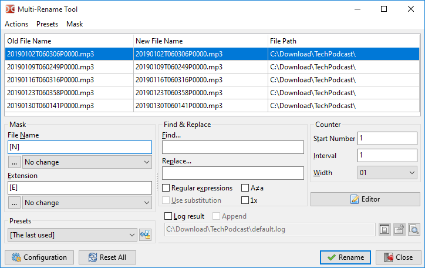
在顶部，我们看到一个表格，列出了我们从源面板中选择的文件，每行一个文件，准备重命名。我们可以通过拖放或 Shift+arrows 来重新排序文件列表。要从列表中删除文件，我们可以使用 Del 键（在删除所有文件后，Double Commander将关闭批量重命名工具）。
表格有三列：
| 批量重命名工具文件名预览表 | |
|---|---|
| 列名 | 描述 |
旧文件名 | 当前行所表示的文件名称 |
新文件名 | 如果我们确认重命名，新文件名将是什么？ |
文件路径 | 文件当前所在位置 |
这个想法是进行一些操作，直到新文件名列向我们显示出我们想要的实际新文件名。
然后我们将按下 重命名 按钮来实际重命名文件。
我们有工具可以生成我们想要的新文件名。
| 可能的工具 | |
|---|---|
| 类别 | 描述 |
占位符 | 使用当前文件名的部分、其属性或其内容来生成新名称的一部分 |
文件列表 | 一个文本文件，包含名称，每行一个，按顺序依次应用于每个文件 |
修饰语 | 修改上述元素所产生的最终新名称的结果字符 |
我们在左侧标记为 Mask（掩码） 的框中定义它们。
正如我们所见，我们定义将用于形成文件名和扩展名的新名称。
这些占位符在方括号之间定义。
通常，这些占位符中的每一个都会返回一个字符串，该字符串将成为我们想要创建的文件名或其扩展名的一部分。
我们可以定义多个连续的，文件名的新部分将是所有这些的连接结果。
基本占位符如下：
对于这两个，我们可以包含一些占位符，以限定将要使用的文件名和/或扩展名的字符范围。
让我们看看一个基于这个样本文件的结果表：
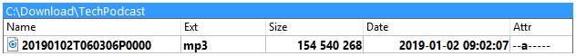
| 可能的占位符 | ||
|---|---|---|
| 占位符 | 描述 | 示例 |
[Nx] | 字符是文件名的第 x 个位置 | [N9] = T |
[N-x] | 从文件名的末尾开始计数，做同样的事情 | [N-5] = P |
[Nx:y] | 文件名中从位置 x 到 y 的字符范围 | [N5:6] = 01 |
[N-x:-y] | 从文件名的末尾开始计数的相同内容 | [N-6:-7] = 06 |
[Nx:-y] | 同样的事情，但从开始计数第一项，从结束计数最后一项 | [N10:-6] = 060306 |
[N-x:y] | 相同的事情，但从末尾开始计数，最后从开头开始计数 | [N-16:6] = 01 |
[Nx,y] | 字符范围将从 x 开始，长度为 y 个字符 | [N10,6] = 060306 |
[N-x,y] | 从末尾开始计数，向左选择 y 个字符，做同样的事情 | [N-8,4] = 0603 |
[Ex] | 字符是扩展的 x 位置 | [E1] = m |
[E-x] | 从扩展名的末尾开始计数相同的内容 | [E-1] = 3 |
[Ex:y] | 从位置 x 到 y 的字符范围在扩展中 | [E2:3] = p3 |
[E-x:-y] | 从扩展的末尾开始计数的相同内容 | [E-3:-2] = mp |
[Ex:-y] | 同样的事情，但从开始计数第一项，从结束计数最后一项 | [E1:-2] = mp |
[E-x:y] | 相同的事情，但从末尾开始计数，最后从开头开始计数 | [E-2:3] = p3 |
[Ex,y] | 字符范围将从 x 开始，长度为 y 个字符 | [E1,3] = mp3 |
[E-x,y] | 从末尾开始计数，向左选择 y 个字符 | [E-1,2] = p3 |
为了确保我们理解了这个概念，这里有一个例子，我们将文件名的掩码设置为 [N1,4]-[N5,2]-[N7,2]
我们看到 新文件名 列已根据上述描述的替换进行了更新。
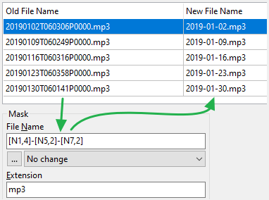
这里还有一些其他的占位符，仍然使用相同的示例文件：
| 其他占位符 | ||
|---|---|---|
| 占位符 | 描述 | 示例 |
[A] | 代表完整的文件名，包括整个路径、目录分隔符、扩展名、冒号和句点 | [A] =完整文件名 |
[A...] | 范围可以像之前一样指定 [Ax]、[Ax:y]、[A-x:-y] 等等…… | [A-9:-5] = P0000 |
[Y] | 文件日期的年份由其最后两位数字表示 | [Y] = 19 |
[YYYY] | 四位数表示的年份 | [YYYY] = 2019 |
[M] | 文件日期的月份编号 | [M] = 1 |
[MM] | 月份数字如果需要则用零填充以适应两位数 | [MM] = 01 |
[MMM] | 月份的缩写，如“1月”、“2月”、“3月”等。 | [MMM] = 1月 |
[MMMM] | 完整的月份名称，如“一月”、“二月”等。 | [MMMM] = 一月 |
[D] | 文件日期的天数 | [D] = 2 |
[DD] | 日期数字如果需要则用零填充以适应两位数 | [DD] = 02 |
[DDD] | 一天的缩写，如“周一”、“周二”、“周三”等。 | [DDD] = 周三 |
[DDDD] | 完整的星期名称，如“星期一”、“星期二”等。 | [DDDD] = 星期三 |
[h] | 文件时间的小时数 | [h] = 9 |
[hh] | 小时数字用零填充，以适应必要的两位数 | [hh] = 09 |
[n] | 文件时间的分钟数 | [n] = 2 |
[nn] | 分钟数如果需要用零填充以适应两位数字 | [nn] = 02 |
[s] | 文件时间的第二个数字 | [s] = 7 |
[ss] | 第二个数字如果有必要用零填充以适应两位数 | [ss] = 07 |
[G] | 动态生成的 GUID 表单：{XXXXXXXX-XXXX-XXXX-XXXX-XXXXXXXXXXXX} | [G] =一个 16 字节的 GUID |
[Px] | 直接命名一个 x 级的完整路径，首先靠近根部 | [P2] = TechPodcast |
[P-x] | 直接命名一个完整路径计数的 x 级，首先靠近文件名 | [P-2] = Download |
[C] | 一个自增计数器，用于每次使用“计数器”框的参数迭代（也支持负数） | [C] = 每个文件都依次数字递增 |
[V:提示] | 一个用户定义的变量“提示”，将在实际重命名过程中提示用户 | [V:Guest] = 提示用户 |
[[] | 插入方括号 | [[] = [ |
[]] | 插入闭合方括号 | []] = ] |
这是另一个例子，我们使用了一些上述占位符，将掩码设置为
[C] - [YYYY]-[MM]-[DD] @ [hh]-[nn]-[ss]
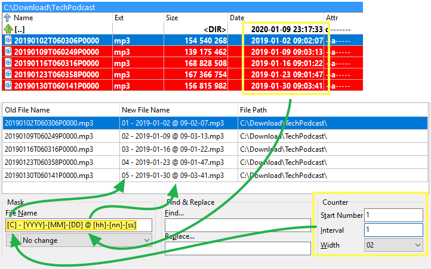
随着时间的推移，如果经常使用，我们会凭记忆输入所需的内容！
等待这个，幸运的是，我们可以按下每个掩码下方的按钮，然后访问一个弹出菜单，这将帮助我们根据需要让应用程序为我们输入。
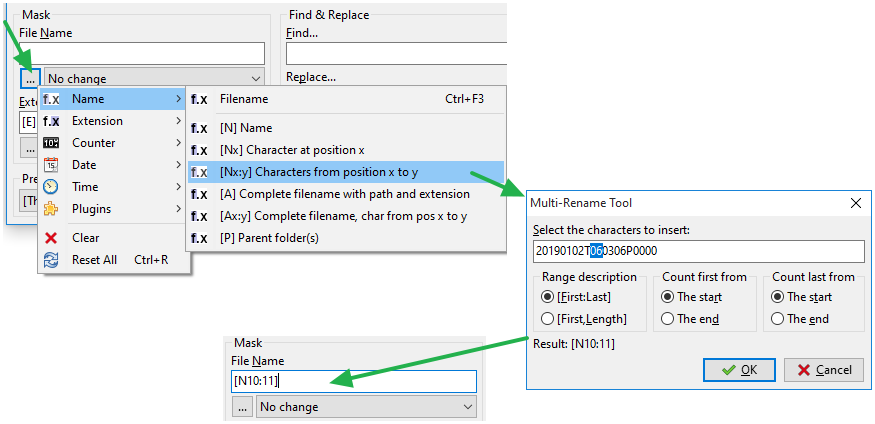
我们也可以使用一个占位符，它将是一个内容插件。
它将从文件中提取所选字段，并将其作为我们想要的新名称的一部分。
以下示例使用多媒体插件提取 MP3 播客文件的时长，并将其放置在文件名的括号中：
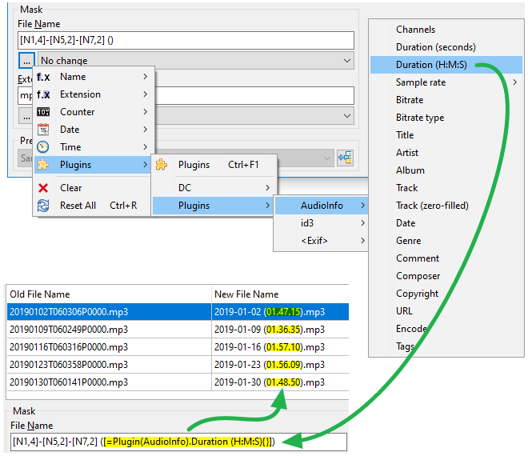
我们还可以使用一个包含文件名列表的文本文件来重命名我们的文件。
将假设该文本文件的每一行包含新的文件名（包括扩展名），以便赋予同一位置顺序中的匹配文件。
此列表可能
还可以从剪贴板加载文件名列表，要使用此功能，您需要打开快捷键设置，切换到“批量重命名工具”类别并为 cm_LoadNamesFromClipboard 命令设置快捷键。
如果我们已经有这样的文件，我们将按下 编辑器 按钮和 从文件加载名称。
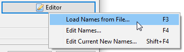
然后我们将被提示指示我们的文件列表。
如果文件的行数与要重命名的元素数量相同，我们将在 新文件名 列中看到每个文件的新文件名。
实际的重命名过程将在我们按下 重命名 按钮时进行。
类似于上述描述的 现有列表，Double Commander可能会即时提供我们创建此文件列表的选项。
按下 编辑器 按钮，然后 编辑名称... 将使工具根据原始文件名创建一个临时文本文件，像前一点一样使用。
与上述相同，除了列表中的文件名来自当前的 新文件名 列。
这种方法在占位符方法给我们提供“几乎”符合我们需求的文件名时可能特别有用，因此我们只需进行一些修整以纠正那些需要满足我们需求的文件名。
以下示例向我们展示了使用此方法时事件的流程。
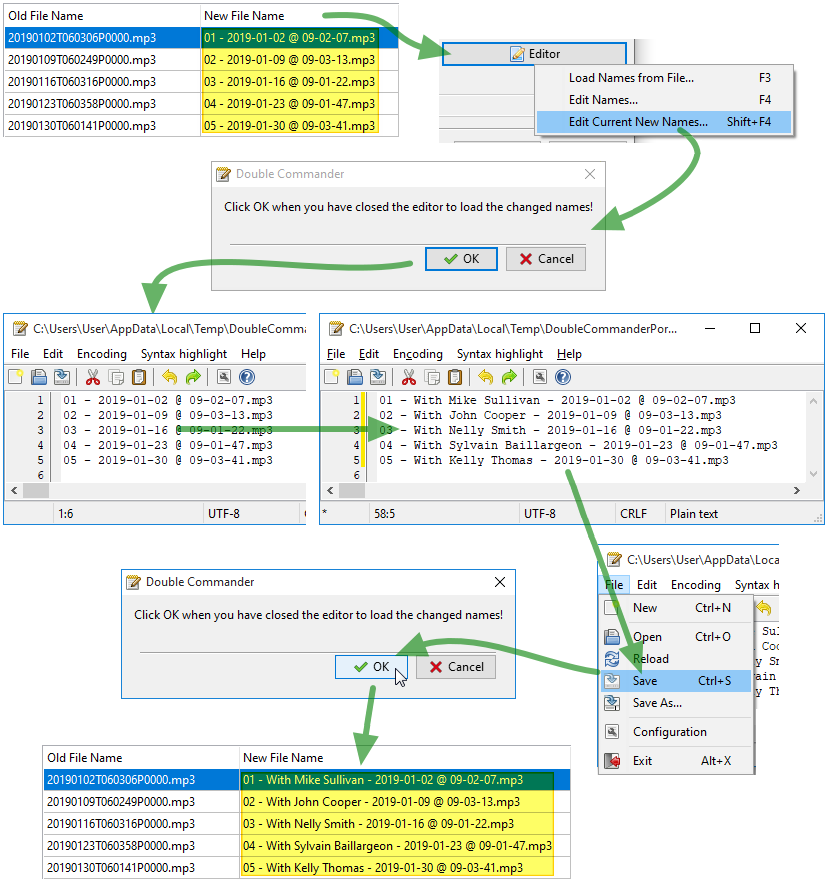
可能的选项如下，将影响新文件名字符的大小写：
即使这个修饰符在Mask（掩码）框内，如果文件名来自列表，它也会被应用。
查找字段中的字符串将被替换字段中的字符串替换。还有几个附加功能可用，见下文。搜索不区分大小写！
额外选项：
A≠a – 允许区分大小写的搜索。
1x – 如果启用，则无论匹配的数量如何，只有第一个会被替换。
这两个参数也会影响正则表达式的行为。
当我们使用上述方法定义了所有的 新文件名 后，我们就准备好启动实际的 重命名 操作。
如果发现重复的名称，Double Commander将提供中止操作或使用自动重命名并添加数字的选项：“name (1).ext”、“name (2).ext”等。请注意，在第二种情况下，自动添加的数字不会显示在“新文件名”列中。
重命名过程完成后，应用程序将重新扫描文件并重新填充上述表格。
旧文件名 列通常会显示我们重命名过程的结果。
新文件名 也将通过重新应用仍然定义的相同占位符/列表/修饰符进行刷新。
通常，我们应该更加关注第一列，因为它代表我们刚刚重命名的新实际文件名。
我们可能需要像之前的会话中一样，重新使用相同的占位符/修饰符进行相同类型的批量重命名。
与其不断重复输入相同的配置，我们可以将当前配置保存为预设，然后在以后重新使用。
要做到这一点，我们点击按钮以访问与预设相关的操作，然后选择 另存为...。
我们给了一个重要的名称，现在我们在预设中添加了一种配置。
下次我们需要批量重命名时，我们将点击预设下拉框，选择我们的预设，然后字段将填充我们保存的内容。
该菜单提到为我们提供了与预设相关的各种操作，例如加载、保存、重命名、删除、排序等。
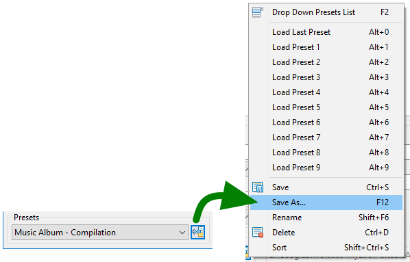
如果我们希望在窗口顶部有一个菜单栏，以便访问所有相关功能并在菜单中查看它们，我们可以勾选此选项。
可能会发生由于我们的调整，文件名中出现无效字符。
为了避免产生错误，Double Commander将用我们在此框中输入的内容替换该无效字符。
如果我们希望简单地去除无效字符，我们可以将这个框留空。
如果我们加载了一个现有的预设，修改了至少一个设置，然后尝试在未保存修改后的预设的情况下退出批量重命名工具窗口，则此选项将决定Double Commander的行为。
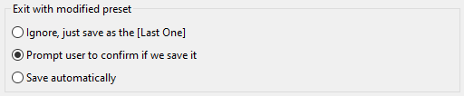
这些设置有助于确定如何处理重命名日志文件的保存。
通过遗留，每个重命名日志文件在每个预设中被定义。
但是在这里选择，我们可以指示Double Commander将这些日志保存到那里定义的单一位置，其中每个重命名操作的结果将附加到重命名日志文件中。
我们可以定义将日志存储到每天的单独目录中。
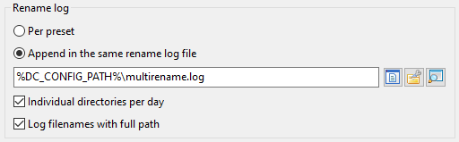